Free-body diagrams for neural networks
Which internal statistics support further learning?
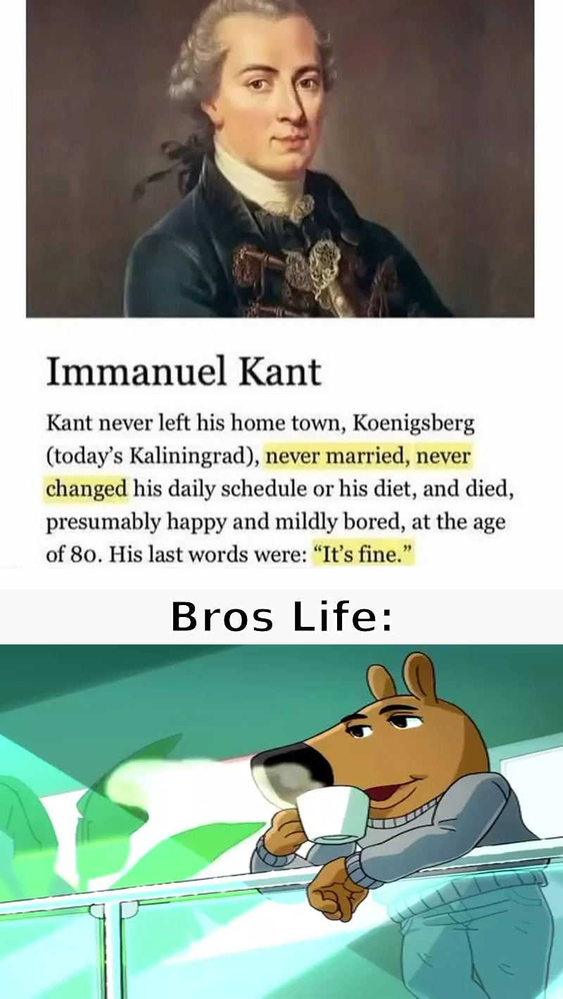
What are the right variables?
Neural networks keep doing weird things
Representative symptomsWhich dynamics survive the details?
Where does higher-order structure matter?
κ>2
Real
mean · covariance · higher orders
μ, Σ
Gaussian
class mean + covariance
μ
Mean
class centres + shared noise
Free body diagrams for neural networks
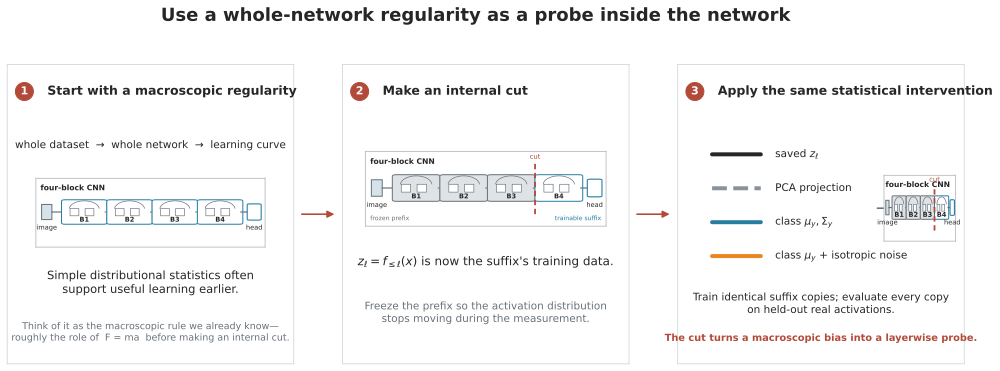
two networks: CNN and ResNet-18
trained on CIFAR
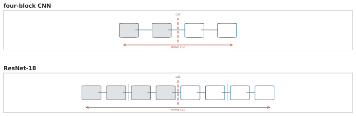
Turn one layer into three datasets
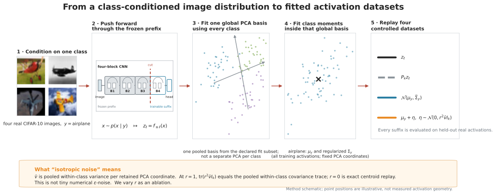
Same suffix. Different internal data.
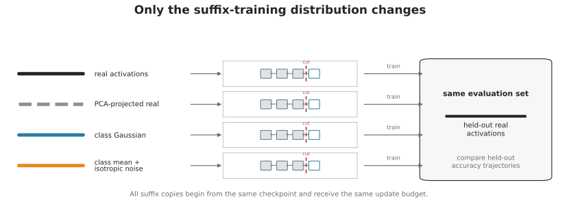
Depth × ordinary training time
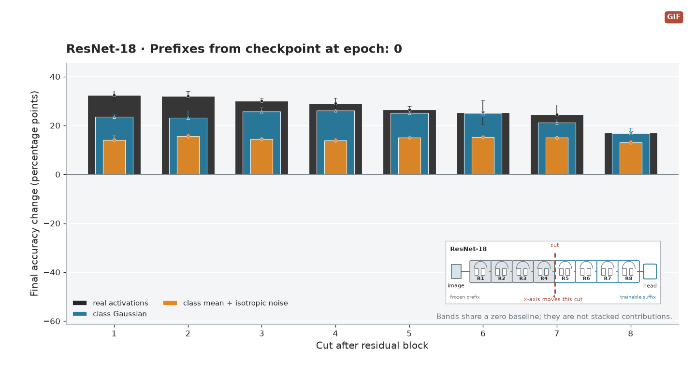
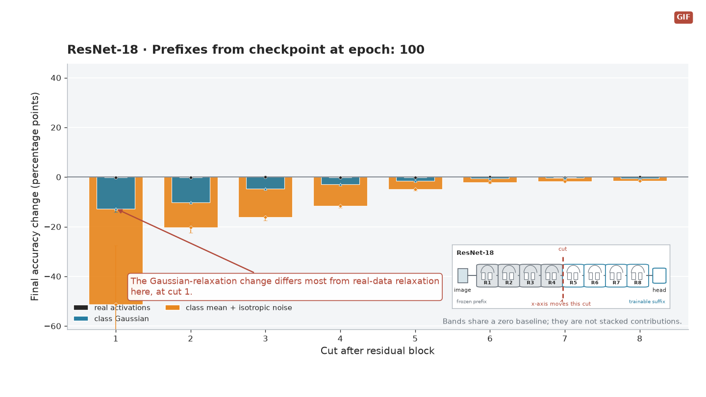
Watch the suffix relax
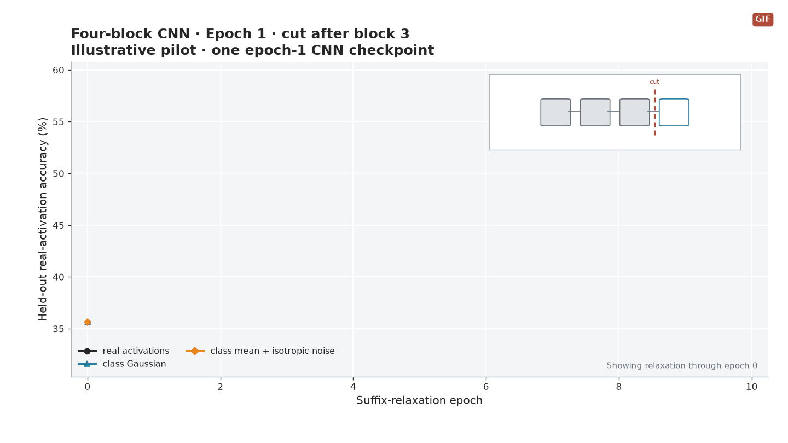
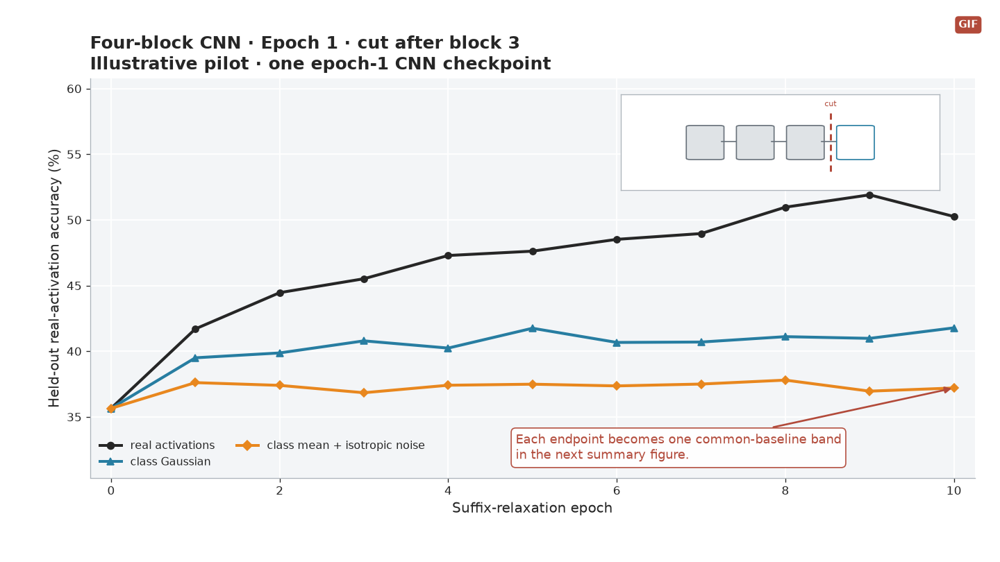
Separate the data from the suffix
•••
Full real
all observed structure
↘
PCA real
projection loss
Σ
Gaussian
non-Gaussian gap
μ
Mean
covariance gap
Same head at every cut
Then let the internal data move again
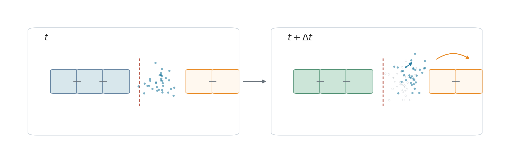
Build the ontology from what stays predictive
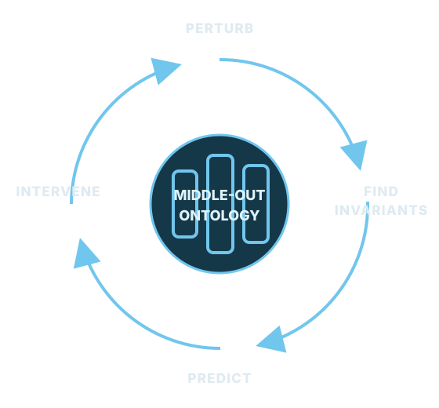
Interpretive boundaries
CNN across ordinary training
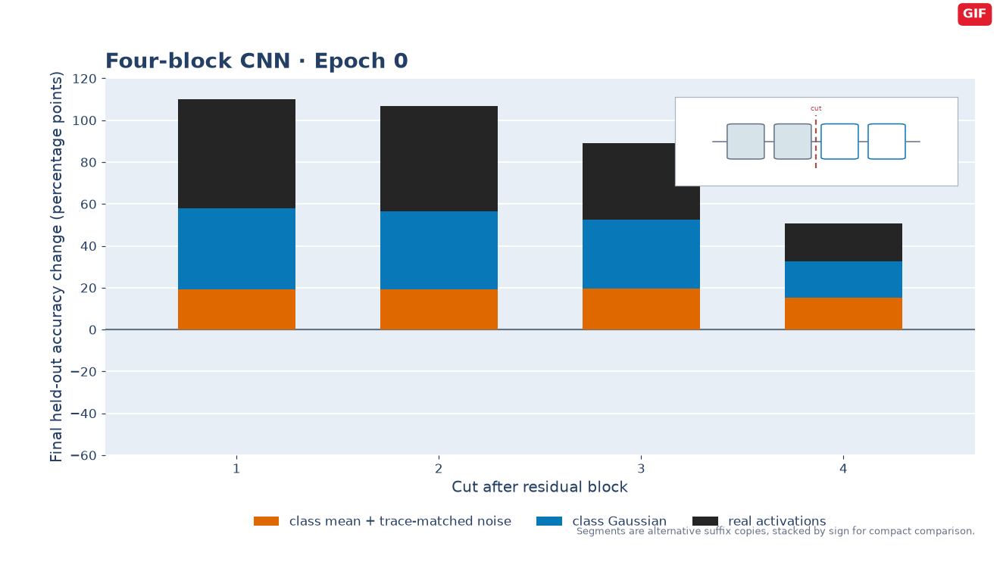
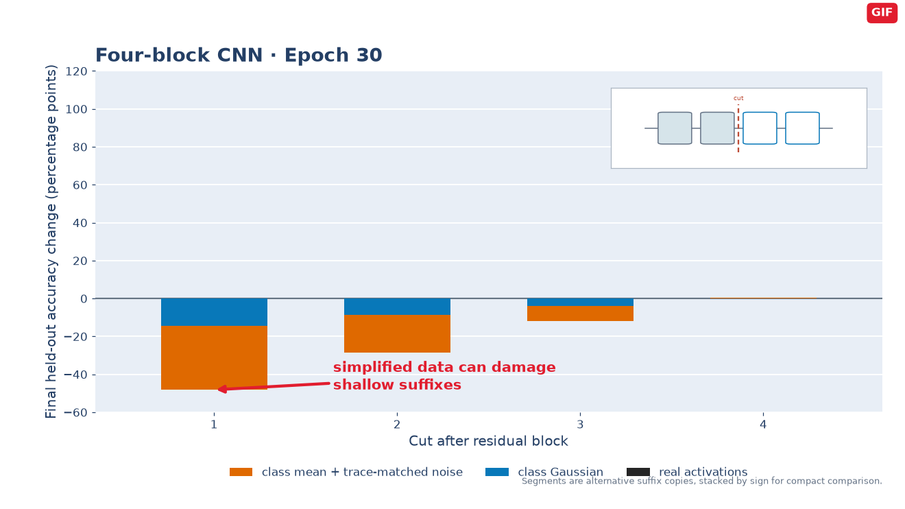
Neural networks have known microscopic laws
⟶
we do not understand how they compute—or what their representations mean
⟶
study dynamics to see how they learn
—?→
let dynamics tell us the natural ontologies
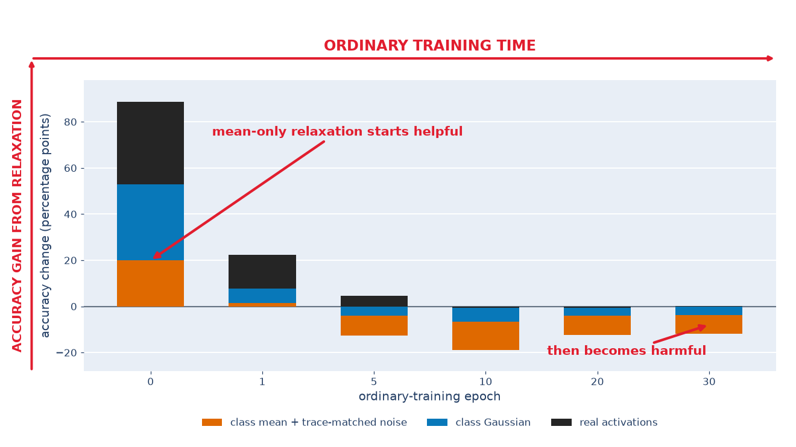